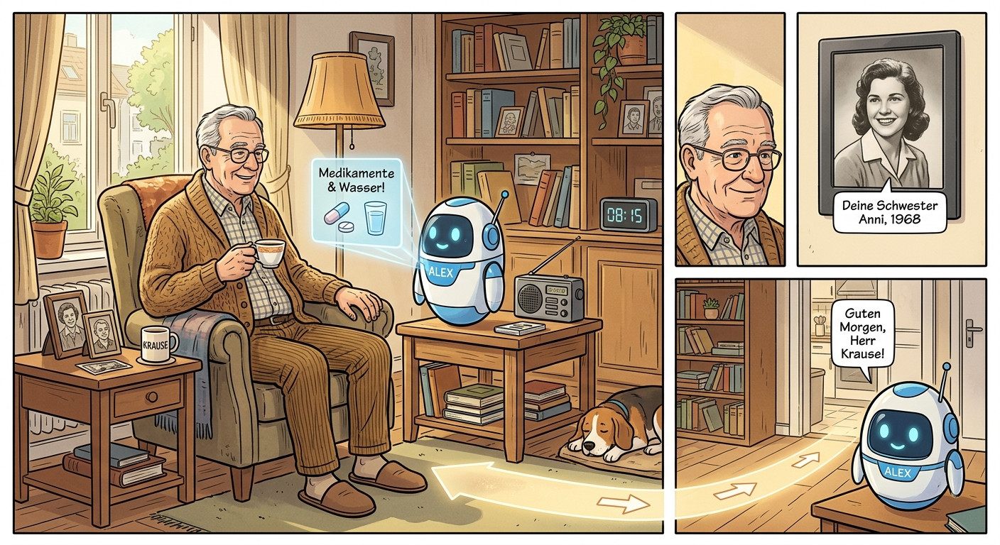

Nachdem ich vor kurzem Was mir Sorgen macht geschrieben habe, möchte ich heute über das schreiben, was mir Hoffnung macht.
Klimawandel
Wir sind nun endlich so weit, dass Endverbraucher einfach durch ihr Kaufverhalten den Klimawandel stoppen können. Die klimaoptimale Variante ist oder wird absehbar auch die günstigste Variante:
- Wärmewende: 65,5% der Neubau-Wohnungen nutzen 2024 Wärmepumpen[1], 23% nutzen Fernwärme, 2% Strom-Direktheizungen (vermutlich Infrarot, weil sie sehr gut gedämmt sind). Nur 0,1% nutzen Heizöl und 5,4% Gas.
- Verkehrswende: Norwegen lässt ab 2025 keine Verbrenner mehr zu[2]. Das zeigt deutlich, dass das kalte Wetter und weite Strecken ohne Infrastruktur kein Hindernis mehr sind. Selbst am Polarkreis fahren Elektrobusse[3]. Auch Island, Schweden, Dänemark und Finnland schreiten deutlich voran[4]. Der technische Fortschritt und Skaleneffekte werden die Wahl immer klarer machen: Die Reichweiten steigen, die Ladezeiten sinken, die Anschaffungskosten sinken. Und die Reparaturkosten sowie die Betriebskosten waren schon immer geringer als bei Verbrennern. Und auch der Ausbau an Ladepunkten kommt voran. In London kann man an Straßenlaternen laden, bei IKEA konnte man kostenlos laden, und die Ladepunkte bei Aldi/Lidl sind inzwischen wirklich überall.
- Energiewende: Der Ausbau an Photovoltaik-Anlagen geht immer schneller voran. Schneller als jeder erwartet hat[5]. Und der Ausbau wird immer günstiger und einfacher. In Deutschland merken wir das bei Steckerkraftwerken (Balkon-Solaranlagen). Ähnlich wie bei der Photovoltaik geht es auch bei den Batterien voran. Immer mehr Menschen haben Heimspeicher. Die Batterie-Systeme werden immer günstiger[6]. Die Anschlussbegehren für Großspeicherprojekte summieren sich aktuell auf 161 GW[7]. Selbst ausgediente Windräder bekommen ein zweites Leben: Beim Repowering abgebaute Anlagen werden anderswo als Second-Hand-Windräder wieder aufgebaut[8].
Das ist ein riesiger Fortschritt. Wenn die Politik nun zumindest nicht aktiv gegensteuert und alles so lässt, wie es ist, werden sich E-Autos bis 2030 auch in Deutschland durchsetzen (also: Mehr als 50% der Neuzulassungen ausmachen). Ab 2035 gibt es eh das Verbrenner-Neuzulassungsverbot und der CO2-Preis wird auch steigen (siehe BEHG / EU-EHS).
Automatisierung
Produktivitätssteigerungen erlauben es uns, mehr Wohlstand zu erlangen. Durch ChatGPT haben wir gesehen, dass zuvor unmöglich zu automatisierende Aufgaben nun automatisierbar sind.
Ganz konkret denke ich an unser Gesundheitssystem:
- Pflege: Demenzpatienten kosten sehr viel Zeit. Etwa 1,8 Millionen Menschen in Deutschland haben Demenz, 2050 werden es voraussichtlich 2,8 Millionen sein. Wir wären nun technisch in der Lage, diese Patienten in einer Wohnung durch eine KI komplett zu überwachen, ihnen Tipps zu geben und im Notfall Hilfe zu holen. Ja, es wäre nicht perfekt.
- Diagnose: Ärzte haben oft wenig Zeit. Ein KI-System könnte die Diagnose unterstützen. Es könnte die Krankengeschichte des Patienten erfassen und den Patienten direkt an den Facharzt weiterleiten.

Und auch in anderen Bereichen haben wir die Möglichkeit, durch Automatisierung Arbeit einzusparen, allerdings schon seit langem:
- Behörden-Kommunikation: Wenn man von einem Bundesland in ein anderes zieht, druckt das Finanzamt die Dokumente aus, schickt sie per Post an den neuen Wohnort, wo das zuständige Finanzamt sie wieder abtippt.[9] Solche absurden Beispiele gibt es sicher häufiger in Behörden und Ämtern.
- Autonomes Fahren: Insbesondere bei U-Bahnen sollte es nicht so schwer sein, autonom zu fahren. Das würde eine höhere Taktung erlauben und die Zuverlässigkeit steigern - wenn kein Fahrer da ist, kann auch keiner streiken. Allerdings muss dazu CBTC umgesetzt werden.[10] Genauso gibt es schon autonome Shuttle-Busse in Kronach, Hof und Rehau.[11] Aktuell werden diese Shuttles mit einem "Operator" (so etwas Ähnliches wie ein Fahrer) betrieben. In Zukunft soll es eine Tele-Leitstelle geben, welche die Shuttles überwacht und sich um ungeplante Ereignisse kümmert. In Hamburg gibt es HEAT und ab 2025 ID.Buzz von Moia, in Karlsruhe Anna, Ella und Vera. 2030 will Hamburg bis zu 10.000 autonome Fahrzeuge haben.
Krankenhausreform
Karl Lauterbach hat das Krankenhausversorgungsverbesserungsgesetz (KHVVG) auf den Weg gebracht. Dieser Meilenstein sollte die Versorgung günstiger und besser machen, indem Fehlanreize abgeschafft werden und die Qualität überprüft wird. Krankenhäuser sollen pauschal dafür bezahlt werden, dass sie eine Leistung prinzipiell erbringen können. Wenn sie das zu selten machen oder die Versorgung schlecht ist, werden diese Pauschalen gestrichen.
Wir haben 1874 Krankenhäuser mit 476.900 Betten in Deutschland (Stand 2023). Insbesondere in Bremen und Thüringen ist die Bettenauslastung gering. Würden wir weniger Krankenhäuser haben, könnten wir das Geld auf die verbleibenden Krankenhäuser konzentrieren und die Qualität steigern. Es gab 2022 beispielsweise 376 Krankenhäuser in Deutschland mit unter 50 Betten.
Auch die Einführung eines zentralen Transparenzverzeichnisses für Qualitätsbewertungen ist aus meiner Sicht wichtig. Als Patient will ich wissen, wie gut ich versorgt werde.
Einzelnachweise
-
Entwicklung der Beheizungsstruktur im Neubau – Baugenehmigungen via BDEW, 09.12.2024. ↩
-
Katja Evers: Verbrenneraus 2025: Wie Norwegen es fast geschafft hat via MDR, 29.12.2024. ↩
-
Sebastian Schaal: E-Bus-Einsatz im Polarkreis geht in den zweiten Winter via electrive, 20.11.2024. ↩
-
14,6 % der in der EU neu zugelassenen Pkw im Jahr 2023 waren Elektroautos via Destatis, 10.09.2024. ↩
-
Money & Macro: Why solar will soon dominate & what that means for the world via YouTube, 22.10.2024. ↩
-
Geladen – Batteriepodcast zur Energiewende: E-Auto-Batterien bald VIEL billiger? Akku-Rennen etwa vorbei? via YouTube, 29.09.2024 (mit Prof. Rupp). ↩
-
Christian Stöcker: Ein Batterie-Tsunami rollt heran via Der Spiegel, 17.11.2024. ↩
-
ARTEde: Das zweite Leben der Windräder via YouTube, 24.12.2024. ↩
-
Plusminus: Warum es Dienstleistungen noch immer nicht online gibt via YouTube. ↩
-
Christina Hertel: MVG stellt Weichen für autonom fahrende U-Bahnen in München via Abendzeitung München, 15.12.2023. ↩
-
Bayerischer Rundfunk: E-Mobilität: Autonom fahrende Shuttle-Busse via YouTube, 15.12.2021. ↩